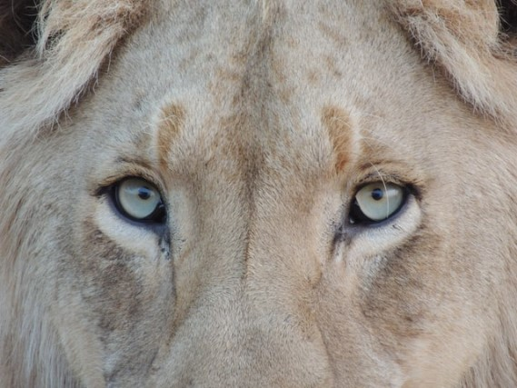

Why Choose Us
We Know Flora
There is a reason that each one of our survival specialists are still around to be instructors. It's simple. Each one has survived by knowing their surroundings, and that includes knowing the local flora. The local vegetation of any environment can be the difference between life and death. Knowing which plants to eat, or not to eat, which trees can provide shelter, and materials for building traps or weapons, are all vital attributes, in which each of our instructors possess.

We Know Fauna
Awareness is a huge part of survival. One of the most important survival abilities is perception. You need to constantly be aware of your surroundings, and that is never more true when you are around dangerous wildlife. Being knowledgable about the local wildlife, and their ability to be hunted, or to hunt you, is absolutely vital. The quickest way to end a trek, is by wandering into the wrong den.